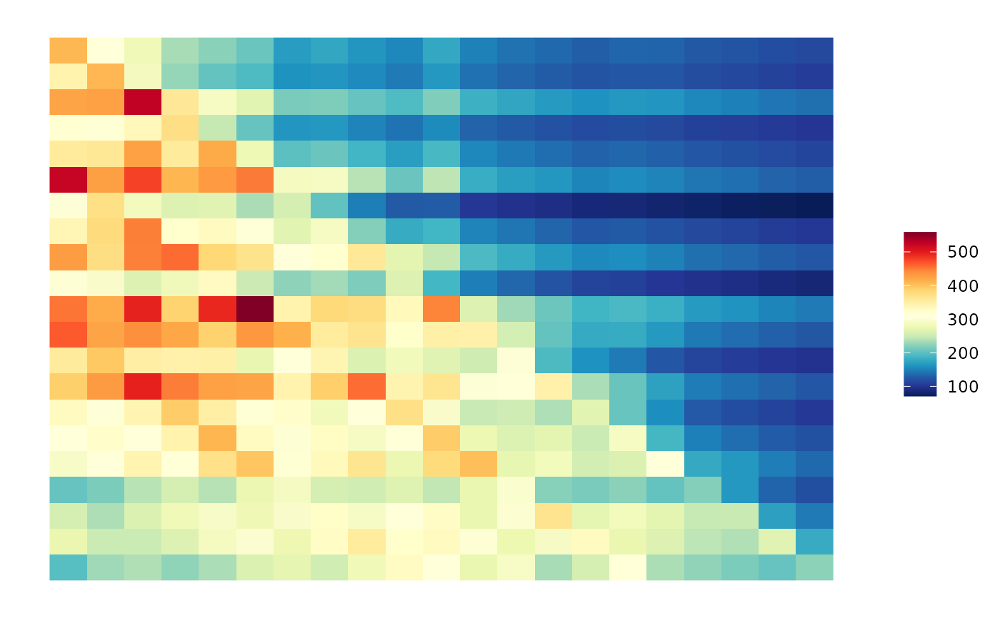

Create a ggplot object used for plot aggregation.
Usage
ggAPA(
apa.mtx = NULL,
title.chr = NULL,
trimPrct.num = 0,
bounds.chr = "both",
minBoundary.num = NULL,
center.num = NULL,
maxBoundary.num = NULL,
colBreaks.num = NULL,
blurPass.num = 0,
blurBox.num = NULL,
blurSize.num = NULL,
blurSd.num = 0.5,
lowerTri.num = NULL,
heatmap.col = NULL,
na.col = "#F2F2F2",
colorScale.chr = "linear",
bias.num = 1,
paletteLength.num = 51
)Arguments
- apa.mtx
<matrix> : The matrix to plot. (Default NULL)
- title.chr
<character> : The title of plot. (Default NULL)
- trimPrct.num
<numeric> : A number between 0 and 100 that give the percentage of trimming. (Default 0)
- bounds.chr
<character> : Which boundary must be trim, if it's both, trim half of the percentage in inferior and superior see SuperTK::QtlThreshold. (Default "both")
- minBoundary.num
<numeric> : Minimal value of Heatmap, force color range. If Null automaticaly find. (Default NULL)
- center.num
<numeric> : Center value of Heatmap, force color range. If Null automaticaly find. (Default NULL)
- maxBoundary.num
<numeric> : Maximal value of Heatmap, force color range. If Null automaticaly find. (Default NULL)
- colBreaks.num
<numeric> : Repartition of colors. If Null automaticaly find. (Default NULL)
- blurPass.num
<numeric> : Number of blur pass. (Default 0)
- blurBox.num
<numeric> : if null automaticaly compute for 3 Sd. (Default NULL)
- blurSize.num
<numeric> : Size of box applied to blurr if null automaticaly compute for 3 Sd. (Default NULL)
- blurSd.num
<numeric> : SD of gaussian smooth. (Default 0.5)
- lowerTri.num
<numeric> : The value that replace all value in the lower triangle of matrice (Usefull when blur is apply). (Default NULL)
- heatmap.col
<character> : Heatmap color list. If null automaticaly compute. (Default NULL)
- na.col
<character> : color of NA values. (Default "#F2F2F2")
- colorScale.chr
<character> : shape of color scale on of "linear" or "density" based. (Default "linear")
- bias.num
<numeric> : a positive number. Higher values give more widely spaced colors at the high end. See ?grDevices::colorRamp for more details. (Default 1)
- paletteLength.num
<numeric> : The number of color in the palette. (Default 51)
Examples
library(GenomicED)
data(aggreg.mtx)
ggAPA(
apa.mtx = aggreg.mtx,
title.chr = "APA center on 0",
center.num = 0,
trimPrct.num = 5,
bounds.chr = "both",
blurPass.num = 1,
blurSd.num = 0.5,
heatmap.col = SuperTK::viridis(6)
)
#> Warning: Use of `data.dtf$x` is discouraged.
#> ℹ Use `x` instead.
#> Warning: Use of `data.dtf$j` is discouraged.
#> ℹ Use `j` instead.
#> Warning: Use of `data.dtf$i` is discouraged.
#> ℹ Use `i` instead.
